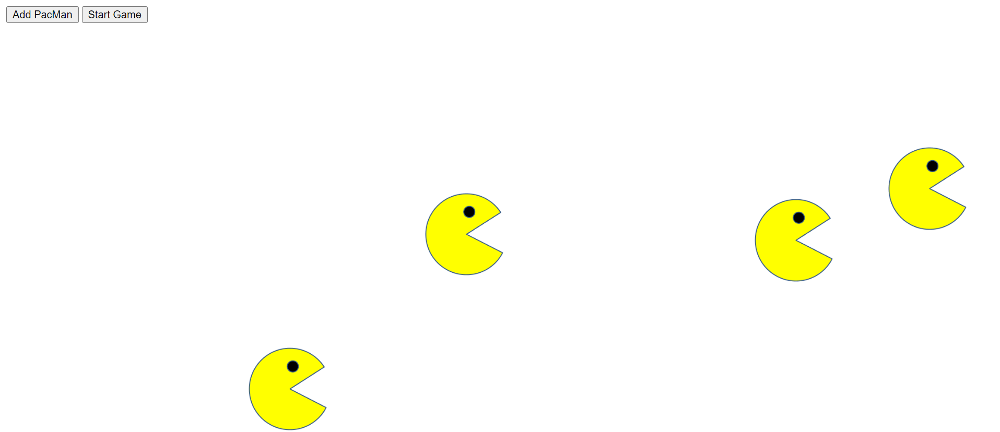
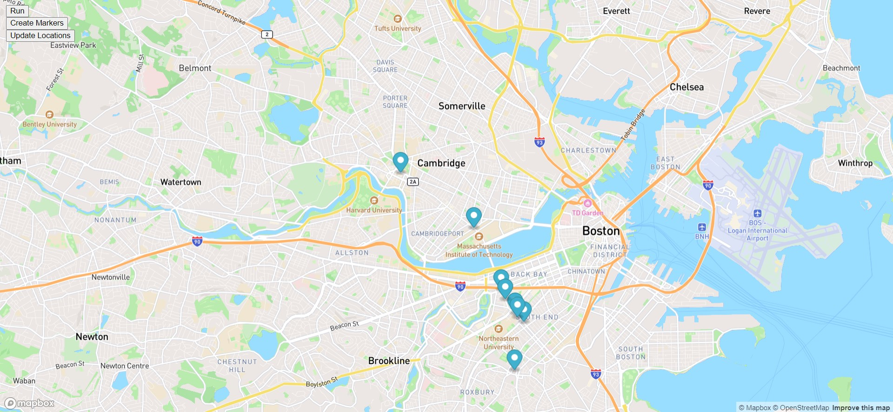

PacMen Factory
This project allows one to create pacman icons on the page by clicking the "add pacman" button. Then the user may click the "start game" button which will make the pacmen start moving across the screen at a random speed. When a pacman encounteres the edge of the screen it will bounce off.

Moving Eyes
In this project a pair of eyes appear. As the user moves their cursor along the page the "pupils" of the eyes will follow.
 Bus Tracker Map Animation
This project shows an animation of a marker moving through four bus stops from MIT to Harvard University. Please click the button on the top left to begin the animation.
Bus Tracker Map Animation
This project shows an animation of a marker moving through four bus stops from MIT to Harvard University. Please click the button on the top left to begin the animation.
 Live Bus Tracker
This project allows the user to track buses going between MIT and Harvard in real time. First the user must click the "run" button and then the "create markers" button. The update tracker button is currently being implemented but isn't fully functional yet.
Live Bus Tracker
This project allows the user to track buses going between MIT and Harvard in real time. First the user must click the "run" button and then the "create markers" button. The update tracker button is currently being implemented but isn't fully functional yet.
